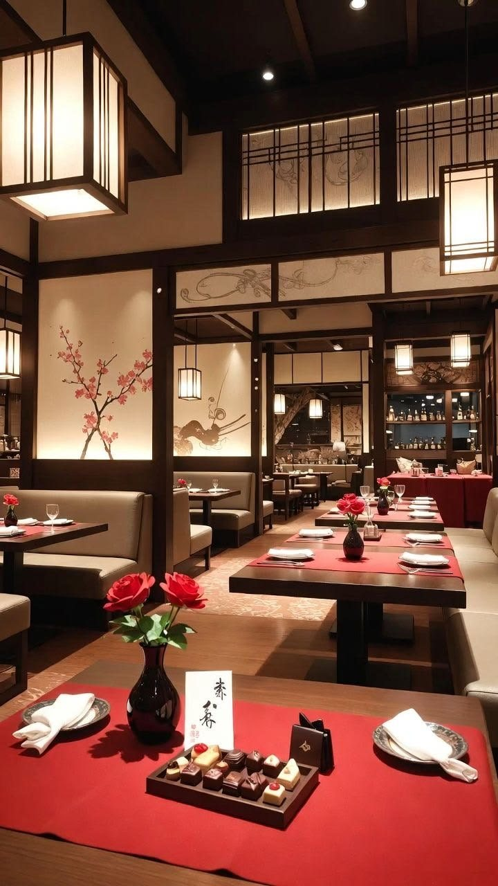
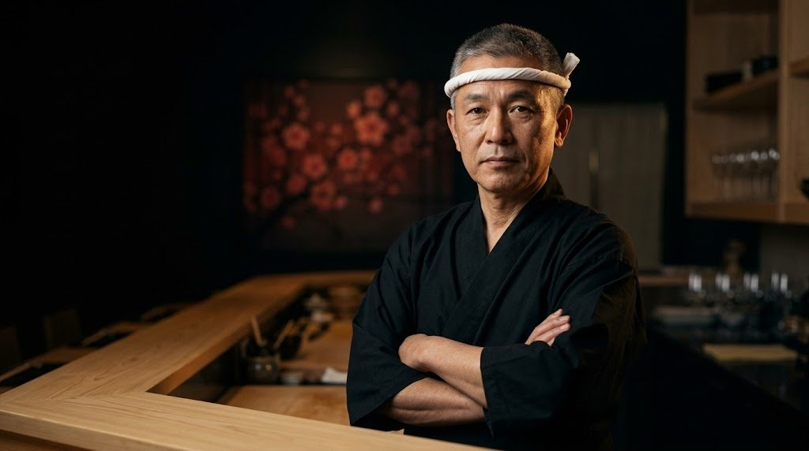
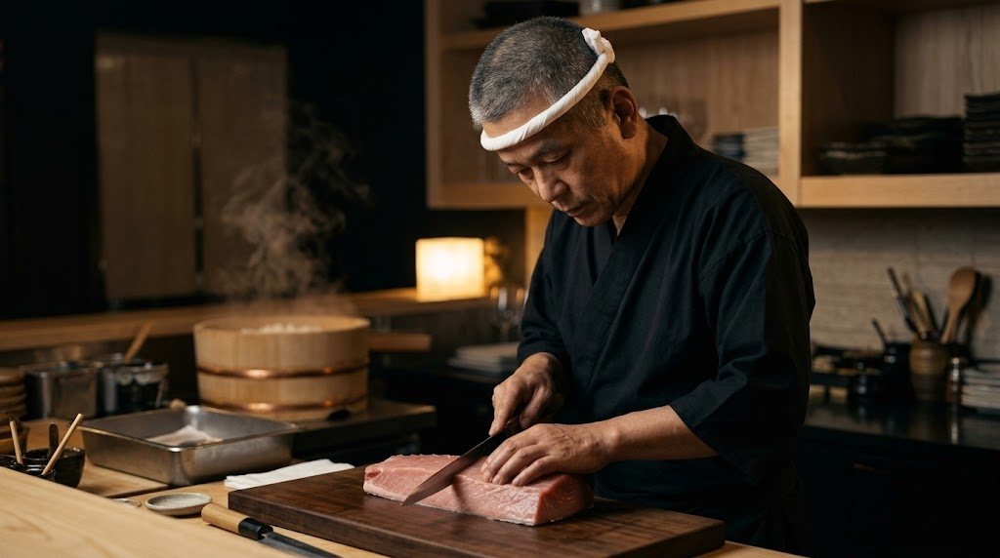
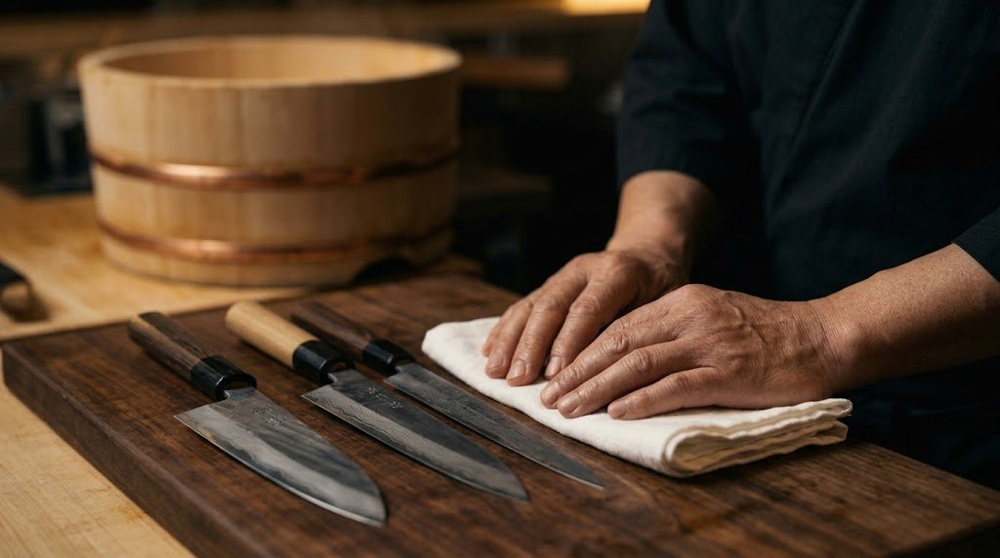
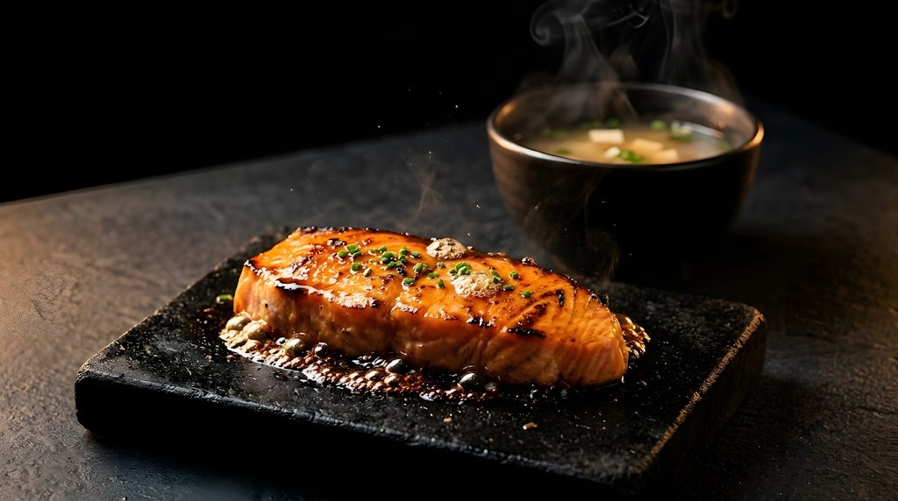
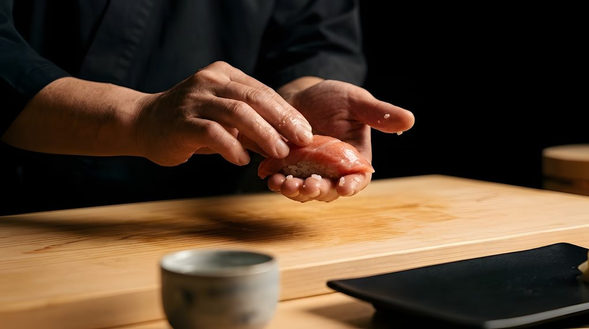

A arte do
corte perfeito.
Peixe fresco · Técnica japonesa · Experiência única
+5.000 clientes satisfeitos
4,9 no Google

Nossa filosofia
Tradição em cada detalhe
Do mar para o seu prato, no mesmo dia. O peixe chega cedo e é cortado na hora, com a paciência que a técnica japonesa exige.
O arroz é temperado a cada serviço, na temperatura do corpo, como manda o Edomae. Nada fica pronto antes de você chegar.
- 0+anos de balcão
- 0+peças no cardápio
- 0+clientes

O mestre por trás do balcão
Itamae Kenji
“O peixe escreve o cardápio. Eu só escuto.”
Trinta anos de balcão. Começou como aprendiz em Tóquio, lavando arroz por dois anos antes de tocar numa faca.
Hoje escolhe o peixe na madrugada, tempera o arroz a cada serviço e desenha cada sequência omakase de acordo com a estação.
- 0anos de ofício
- Edomaeescola de Tóquio
- 0facas, uma para cada corte


Assinaturas do chef
Criaçõesque contam histórias
Role para percorrer

Na pedra quente
Quente. Delicado. Inesquecível.
Salmão glaceado no tarê, selado na pedra vulcânica. O vapor sobe, a gordura desperta e o missô chega fumegando ao lado.
O ambiente
Um refúgiojaponês
Lanternas de papel, cerejeiras em flor e madeira escura. Um salão pensado para desacelerar.
“O silêncio do balcão também é tempero.”
— Itamae Kenji
Experiência omakase
Sente-se no balcão.Deixe o chef escolher.
-
Escolha o dia
Apenas 8 lugares por sessão, às 19h e às 21h30.
-
O chef prepara na sua frente
Cada peça é moldada e servida no momento exato.
-
12 a 15 tempos
Uma sequência que segue a estação e o melhor peixe do dia.
Depoimentos
Palavrasde quem provou
O omakase foi uma aula. Cada peça chegou no tempo certo.
Reservas
Sua mesaespera por você
Confirmamos sua reserva em até 1 hora, por WhatsApp ou ligação.
Reservar pelo WhatsAppLocalização
Visite-nosno coração da cidade
Rua das Cerejeiras, 120 — Jardins, São Paulo/SP
| Segunda | Fechado |
|---|---|
| Terça a Quinta | 18h30 – 23h |
| Sexta e Sábado | 18h30 – 00h |
| Domingo | 12h – 16h |